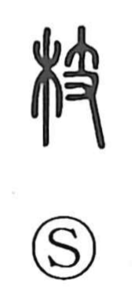

枝

Uncategorized
Kun: eda | On: shi
branch ・ twig ・ to branch off
Explanation
Shirakawa traces 枝 back to 支, a graph that shows a hand (又) holding a small twig, and which originally meant a branch. As 支 later broadened in use to mean supporting or dividing, the wood element 木 was added to make the tree-sense explicit, creating 枝. The character is thus phono-semantic: 木 signals the domain of wood, while 支 (read shi) provides the sound and the idea of something that extends from a main body. This is the nuance heard in compounds like 枝葉, the branches and leaves of a tree, and even in 四肢, the limbs that branch from the trunk of the body.